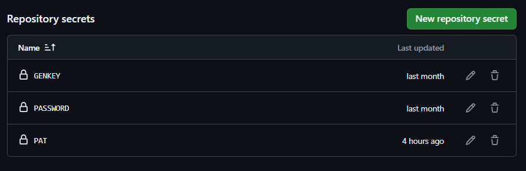

🎭 Lập Trình Chatbot “Trap Girl” Trên Facebook Messenger 🎭
👋 Xin chào!
Mình là Nguyễn Hoàng Thế Vĩ, và hôm nay mình sẽ hướng dẫn các bạn cách tạo một con chatbot để chạy trên tài khoản Facebook Messenger.
🛠️ Bước 1: Tạo tài khoản Facebook clone
Bỏ qua bước này nếu bạn đã có acc Facebook muốn chạy.
🔒 Bước 2: Thiết lập xác thực hai yếu tố (2FA)
Để sử dụng tài khoản này với GitHub Workflows, mình cần bật Xác thực hai yếu tố (2FA).
Truy cập:
Cài đặt & quyền riêng tư > Xem trong trung tâm điều khiển > Mật khẩu & bảo mật > Xác thực hai yếu tố.
Sau đó, Facebook yêu cầu nhập mật khẩu và mã xác minh:

Mình chọn phương thức Ứng dụng xác thực:

Facebook cung cấp một Secret Key, hãy nhớ kỹ vì nó rất quan trọng! Nhấn Sao chép khóa để lưu lại.

Truy cập totp.app để tạo mã OTP từ Secret Key:

Nhấn nút (+), nhập Secret Key và đặt tên dễ nhớ:

Sau đó, mình sẽ có thể lấy mã OTP từ Secret Key này:

Nhập mã OTP vào ứng dụng Facebook:

Hoàn tất thiết lập Xác thực hai yếu tố:

🤖 Bước 3: Chạy chatbot AI
Mình tạo một repo GitHub trống tại GitHub với tên bất kì mess1.

Tiếp theo, mình tạo một file .github/workflows/A.yml trong repo và copy nội dung từ:
👉 vincentng295/gemini_fbchat/.github/workflows/aichat-schedule.yml

Commit file đó lên repo.
⚙️ Bước 4: Cấu hình GitHub Workflows
Vào Settings > Actions > General, trong phần Workflow permissions, chọn Read and write permissions để GitHub có thể upload file đăng nhập Facebook.

Tiếp theo, vào Settings > Secrets and variables > Actions và thêm ba secret sau:

PASSWORD: Mật khẩu để giải mã các tệp mã hóa, bạn tự đặt nhéGENKEY: Google Developer API key để sử dụng Gemini AI-
PAT: Personal access token (classic) với quyền sau để chạy Github worklows lâu hơn-
repoFull control of private repositories
-
repo:statusAccess commit status
-
repo_deploymentAccess deployment status
-
public_repoAccess public repositories
-
repo:inviteAccess repository invitations
-
security_eventsRead and write security events
-
-
workflowUpdate GitHub Action workflows
-
Cách lấy Gemini API KEY:

⚙️ Bước 5: Chạy Github Workflows

🔑 Nhập các thông tin cần thiết:
- Thông tin đăng nhập Facebook (username, password, mã secret đã lấy ở bước trên, mã giải mã cuộc trò chuyện đầu cuối).
- Bỏ qua tường cookies (nếu không biết là gì, cứ để mặc định).
🎭 Cấu hình persona introduction để thiết lập tính cách và cách trả lời của con bot. Ở đây mình đặt:
⚙️ Cấu hình tùy chọn (Options):
🎉 Hoàn tất!
Giờ thì chatbot của mình đã sẵn sàng hoạt động trên Facebook Messenger